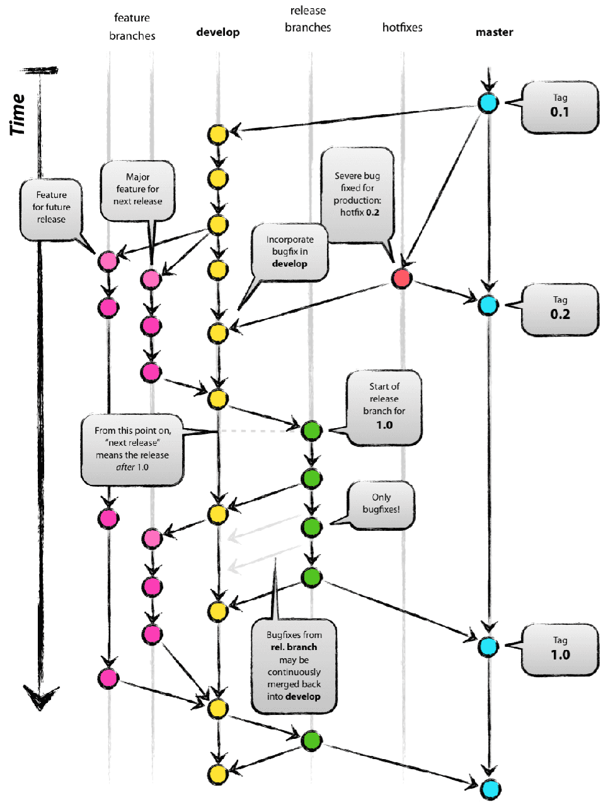
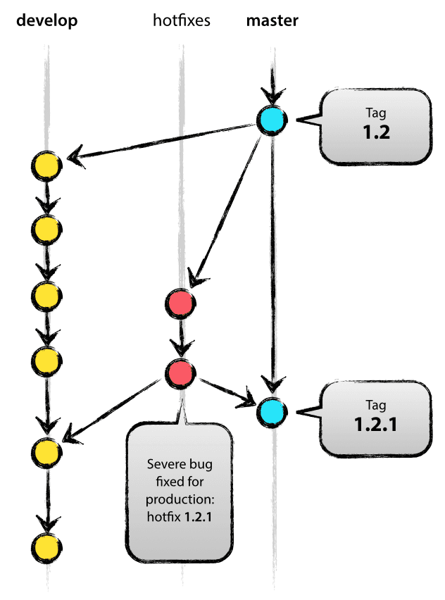

Our Git Habit of Narration Recording project
Abstract
We released a new web application called ナレ撮り which enables users to record the voice as narration on web browsers and combine them with video sources and generate videos in last month. In this post, we introduce our daily Git habit how to handle multiple branches to add new features and release official versions and hotfix releasing for bug fixing as professional development.
Our development team refers to a good article of Git Workflow and the format of commit log of AngularJS guys.

Branches
Feature branches
When you develop new features or fix bugs and the total modified lines will be relatively larger compared with prior ones you developed, then you should create new branches and merge after finishing the developments as general Git culture.
Stage branch
It is a primary development branch and feature branches will be merged to stage branch after successfully tested and reviewed.
This branch is a head of any other branches, but there is a possibility any degrade happens with merging the working branches into this branch. Therefore we can't release this branch as official version right now.
Release branches
- On each release, we create a new release branch based on latest stage branch for both recording and video repositories (even though there may not have any changes since last release for one repository).
- The release branch should be named as release/[VERSION_NUMBER].
- Sometimes a hotfix releasing is needed and we can apply hotfix commits to the release branches

Tags
Tags are created with the release branches of both recording and video repositories after the final reviewing the release has been successfully passed.
Commit logs
We apply 3rd party knowledge for the format of commit logs from AngularJS guys. We follow the tiny rule in the article as below.
<type>(<scope>): <subject>
Type : Must be one of the following:
| Type | Meaning |
|----------+--------------------------------------------------------------------------------------------------------|
| feat | A new feature |
| fix | A bug fix |
| docs | Documentation only changes |
| style | Changes that do not affect the meaning of the code (white-space, formatting, missing semi-colons, etc) |
| refactor | A code change that neither fixes a bug nor adds a feature |
| perf | A code change that improves performance |
| test | Adding missing or correcting existing tests |
| chore | Changes to the build process or auxiliary tools and libraries such as documentation generation |
For examples, our commit logs would be below.
fix(gui): Fixed file uploading. Refs #REC-XXX
fix(video): Make ffmpeg video generation more stable. Refs #REC-XXX
test(django): Added new tests for admin contract page. Refs #REC-XXX
feat(gui) : Added Narration script function. Refs #REC-XXX
Utilize special keywords in commit logs
When we commit, we fill understandable commit logs and use special keywords such as Refs #TICKET_NUMBER to make the references with the corresponding tickets. Therefore before committing, we create tickets at first and make the references with the commit logs.
Rules for merging
When we merge branches, we have a rule to add "–no-ff" as command option to suppress fast-forward of the default behavior of Git.
For examples: git merge --no-ff feature/REC-00
Modification of DB models
When we modify the models of Django with development tasks, we do that on stage branch at first. We sometimes encountered DB migration issue on stage branch and it also caused runtime issues on our individual working branches. To prevent from happening the same issue, we applied a simple work flow to modify DB models only on stage branch.
- If you need to modify models of Django, checkout stage branch at first
- Modify the models and execute migration against staging DB
- Merge stage branch into your working branches